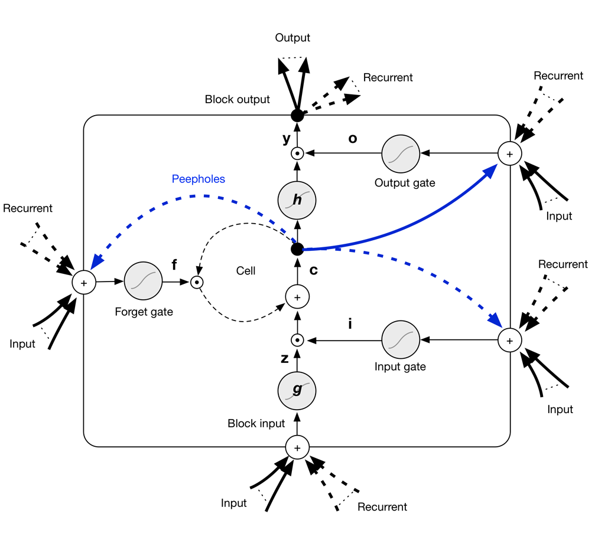
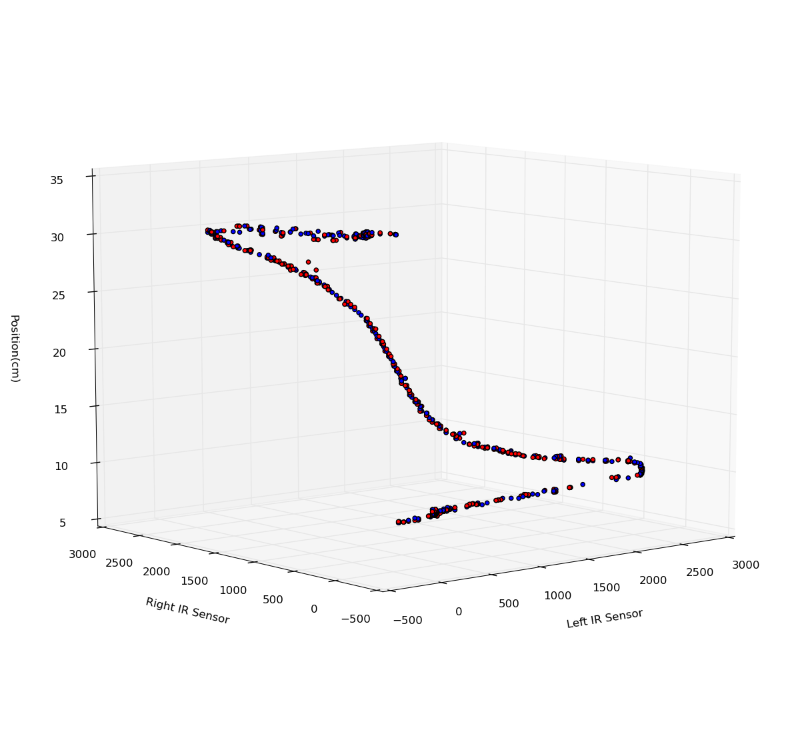
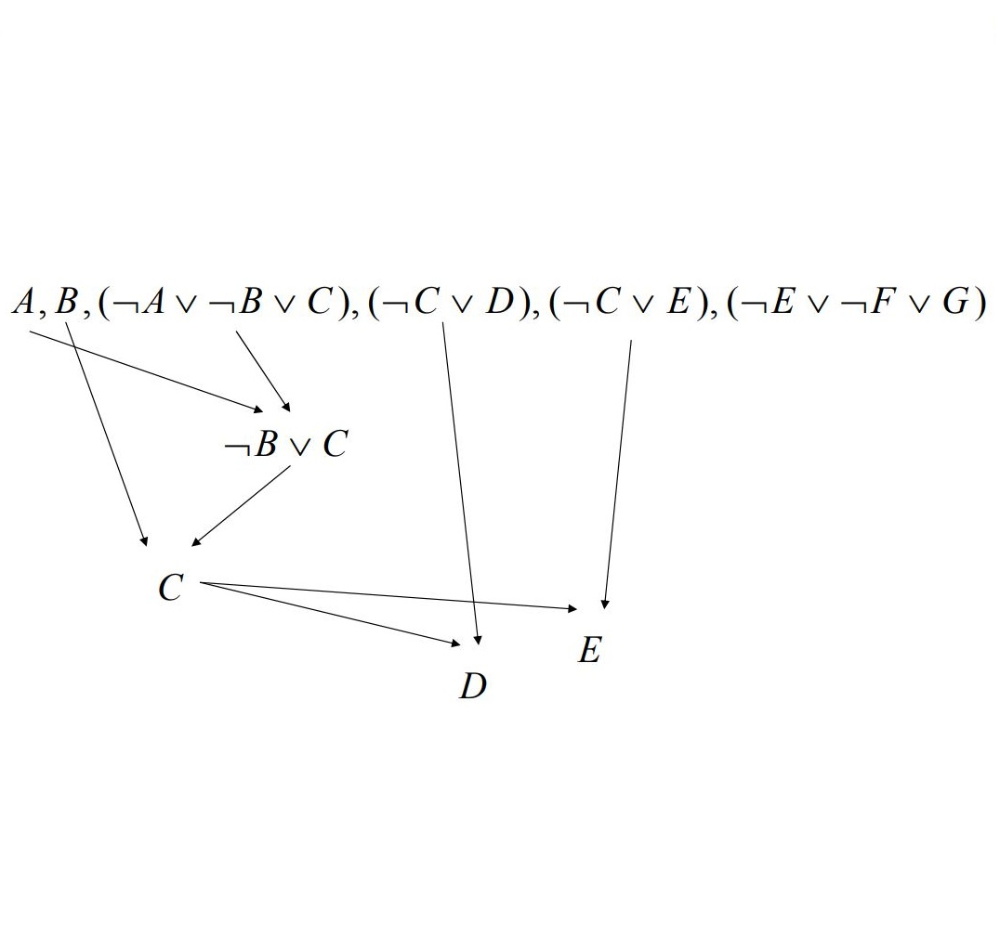
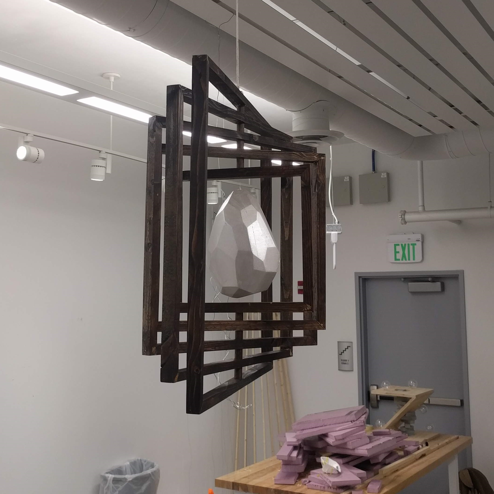
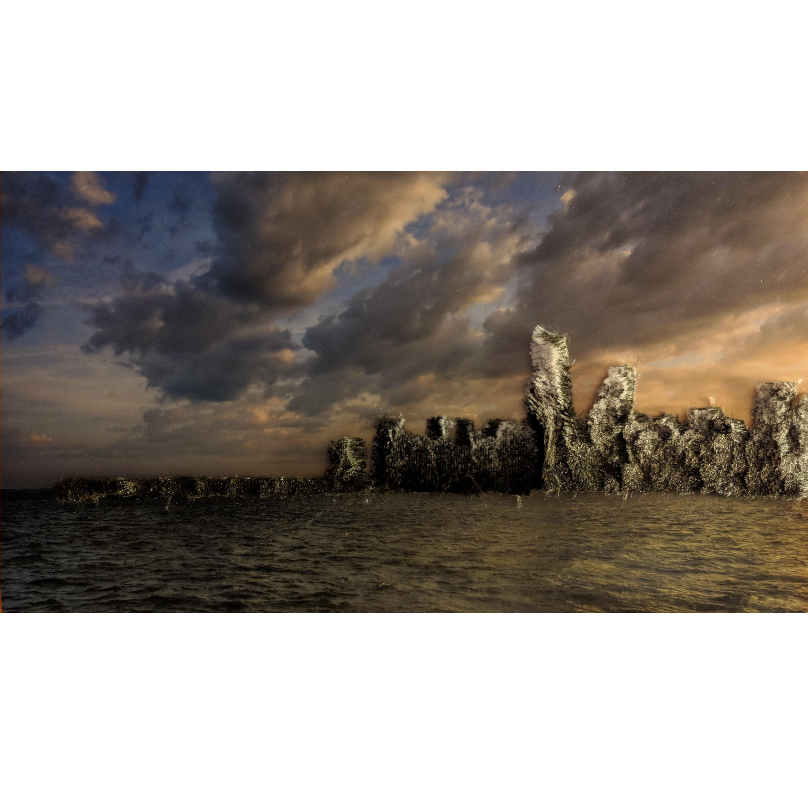
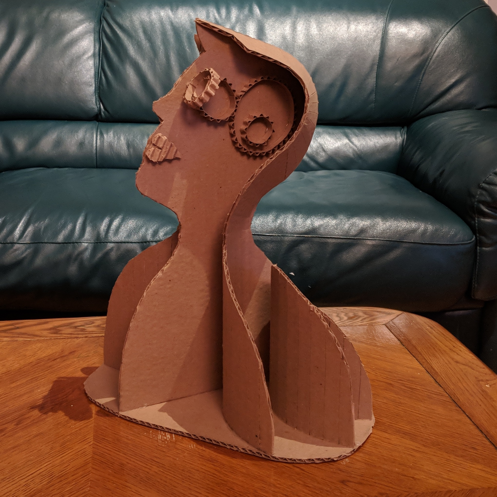

Programming Projects
Machine Learning and Artificial Intelligence
-

Lyric Generator for Hit Songs
Long Short-Term Memory Recurrent Neural Networks (LSTM RNN) generate lyrics mimicking hit songs from different decades: 1970's, 1990's, 2000's
-

Autonomous Robot Localization
Locally Weighted Regression enhances localization in an autonomous maze solver robot
-

Minesweeper Logical Reasoner
Tackling issues of computational complexity in rules-based reasoner systems
Art
-

Ripple
Wood and Polystyrene
-

Fur
A concept for a public monument: cover every building in the world with fur
-

Bust
Cardboard